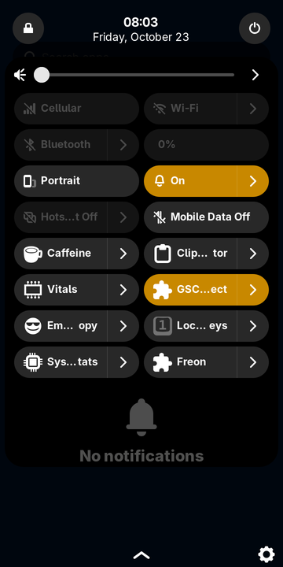
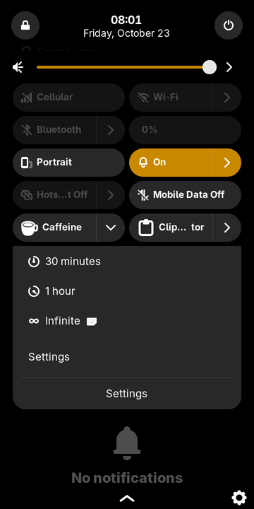
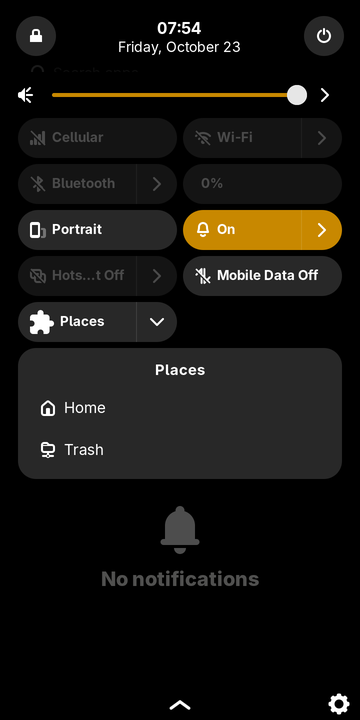
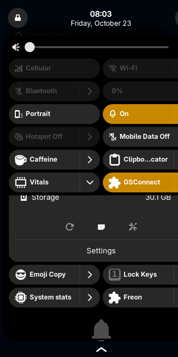
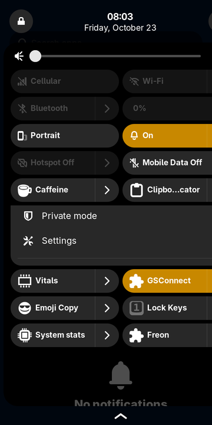
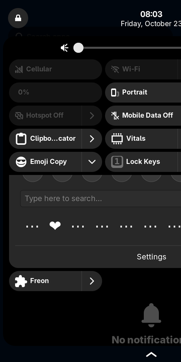
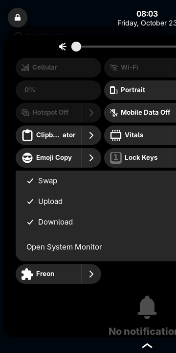
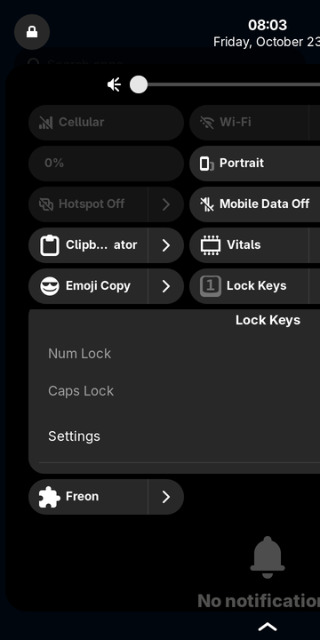
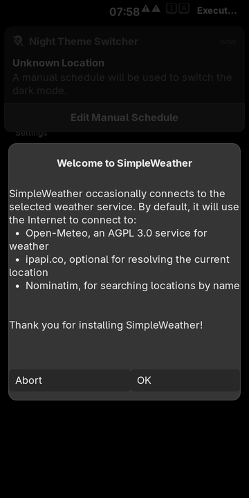
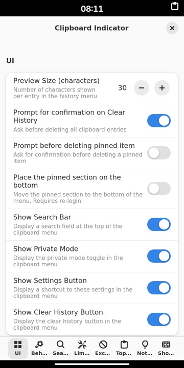

gnosh runs GNOME Shell extensions inside Phosh, the GNOME mobile shell.
Indicators land in Phosh's top bar; their menus, toggles and sliders become native quick settings tiles;
dialogs and notifications are Phosh's own. Preferences, Extension Manager and gext work as on GNOME.
Version {{version}} · GPL-3.0-or-later · Phosh only: it does nothing in GNOME, KDE or other desktops.


In a Phosh session (or over ssh as the Phosh user):
curl -fsSL https://raw.githubusercontent.com/dixonSolutions/gnosh/main/setup.sh | shor from git:
git clone https://github.com/dixonSolutions/gnosh
cd gnosh && ./setup.shThen log out and back in. Everything goes into your home directory (~/.local, ~/.config,
flatpak --user), so it works on immutable systems without root. setup.sh also installs
Extension Manager and
gnome-extensions-cli, and enables daily updates.
gnosh install clipboard-indicator@tudmotu.com # uuid, extensions.gnome.org URL, search term or .zip
gnosh install caffeine
gnosh list -v
gnosh prefs caffeine@patapon.info
gnosh doctorPanel buttons (System Monitor, Vitals, Lock Keys, Executor, …) show in Phosh's status area.
Every indicator menu opens in a native Phosh quick settings page. It's GNOME's own popup menu code running on gnosh's St.
QuickToggle and QuickMenuToggle (Caffeine, GSConnect, …) become Phosh tiles that reflect their on/off state.
ModalDialog uses Phosh's system dialog, MessageTray uses Phosh's notifications (with actions), and OSD uses Phosh's OSD.
Each extension's own prefs.js runs unchanged in an adaptive libadwaita window.
org.gnome.Shell.Extensions D-Bus API: Extension Manager, gext and gnome-extensions just work. Installs load live.
Unmodified extensions from extensions.gnome.org, in Phosh 0.58 (postmarketOS edge).








GNOME Shell extensions are JavaScript that runs inside gnome-shell and uses its private toolkits (St, Clutter, Meta, Shell) and UI modules. Phosh is a different shell written in C and GTK 3. gnosh brings the missing parts to Phosh:
phosh process (stock /usr/libexec/phosh, started with GTK_MODULES=libgnosh-phosh.so)
├─ libgnosh-phosh.so ─ loads libgjs, runs the gnosh runtime
├─ extension.js, stylesheet.css (unchanged)
│ imports resource:///org/gnome/shell/ui/… gi://St gi://Clutter …
├─ GNOME Shell 50's own JS (popupMenu, panelMenu, quickSettings, extensionSystem)
│ + gnosh's main.js, panel.js, messageTray.js, modalDialog.js, …
├─ St / Clutter / Meta / Shell implemented on GTK 3
└─ bridge → Phosh top bar · PhoshQuickSetting tiles · PhoshStatusPage
PhoshSystemModalDialog · notifications · OSD · accelerators
D-Bus: org.gnome.Shell.Extensions (Extension Manager, gext) · io.github.dixonsolutions.Gnosh (gnosh CLI)Read more in the documentation, including what does not work and why.